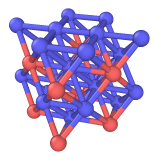

| Table of Contents | Create bonds | Up |
|---|---|---|
| Prev | Modifiers | Next |
| Table of Contents | Create bonds | Up |
|---|---|---|
| Prev | Modifiers | Next |
| Input: | Output: |
 |

|
This modifier generates new bonds between pairs of particles using a distance-based criterion. Optionally, the generation can be further restricted to certain pairs of particle types.
You can choose between two modes of operation:
A single cutoff radius is used to create bonds between pairs of particles, irrespective of their type.
This mode gives you more control over which particle types get connected by bonds.
The table lists all pair-wise combinations of particle types defined for the current system.
Enter a cutoff distance in the third column to create bonds between pairs of particles of the given types.
Note that this mode is only available if particle types have been defined, i.e. if the particle property Particle Type
exists.
The Suppress inter-molecular bonds option restricts generation of bonds to particles that
are part of the same molecule, i.e. which have matching values of the Molecule Identifier property.
If the Molecule Identifier particle property is not defined, this option has no effect.
The modifier lets you optionally specify a lower cutoff value. It effectively restricts the generation of bonds to a distance range with a lower and an upper bound.
The modifier defines a new bond type, which will be assigned to bonds newly created by the modifier. The properties of this bond type, in particular its name and display color, can be edited in the second parameter panel. Furthermore, the modifier will automatically create a bonds visual element, which controls the visual appearance of bonds. The third parameter panel shows the display settings of this visual element.
Like with particles, OVITO supports the assignment of arbitrary properties to bonds which have been generated by this modifier or which were read from an input data file. Certain bond properties (see this section) are used by OVITO to control the visualization of bonds. By setting the values of these properties, for example using the Compute property modifier, you can adjust the visual representation of individual bonds.
OVITO stores a triplet of integer numbers with every bond in the Periodic Image property field.
This triplet specifies whether a bond crosses the periodic boundaries of the simulation cell (if any) and in which direction.
For example, a bond crossing the periodic cell boundary in the positive X direction is associated with the triplet (1,0,0) and
will be visualized as two separate half bonds, one on either end of the cell. Bonds in the interior of the simulation box which do not cross a
periodic boundary have a Periodic Image value of (0,0,0).